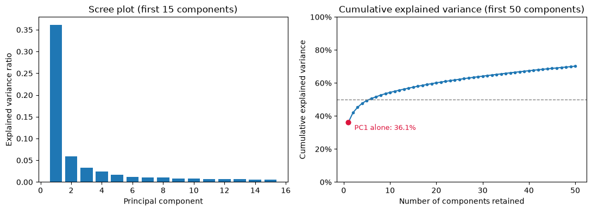
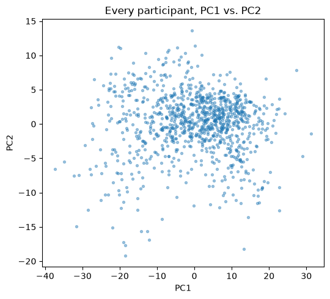
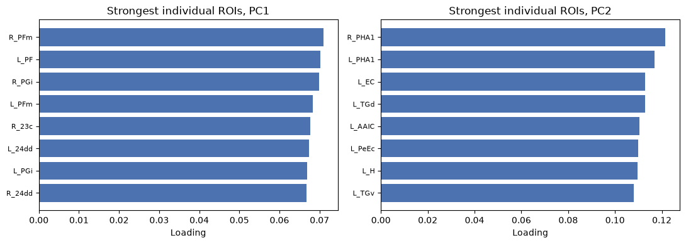
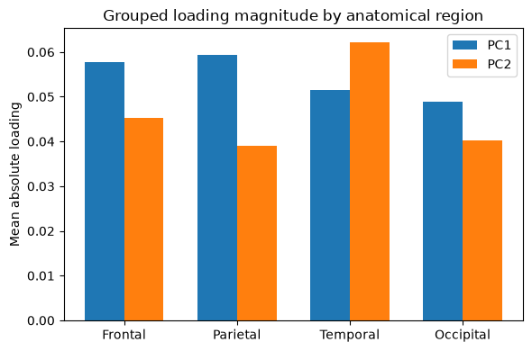

Exercise 8: Unsupervised Learning#
Run or download this notebook
This page is fully readable as it is, and the interactive activities work here in the browser. To run or change the Python code, use the portable version of the notebook:
View or download the portable
.ipynbfor VS Code or Jupyter
The portable notebook keeps every Python analysis cell and swaps each embedded activity for a link back to this page.
What this notebook covers#
This is Exercise 8 of Machine Learning for Neuroscience. Every earlier exercise predicted a target from labeled examples. This notebook asks a different question:
What can we learn from brain measurements when no target is supplied at all?
In this notebook you will:
reduce many brain measurements to a smaller set of principal components;
examine what those components represent;
group participants with K-means without using a target label;
use PCA correctly inside a supervised prediction pipeline.
Prerequisites: Exercise 2 (regression) and Exercise 6 or 7 (any tree-based exercise, for held-out validation habits).
1. Learning Without a Target#
Every earlier exercise was supervised: each participant had a target value (age, diagnosis) that the model learned to predict, and we judged success by held-out prediction accuracy. Unsupervised methods receive only the input measurements – no target column – and instead describe structure that already exists in the data.
Unsupervised methods can help researchers:
summarize many related measurements with a much smaller set of numbers;
visualize participants in a lower-dimensional space;
explore whether participants with similar measurement profiles form groups;
generate hypotheses for later validation on independent data.
Nothing here replaces held-out testing. An unsupervised result is a starting point for a hypothesis, not a confirmed finding.
Think first
With no target column supplied, what information can an unsupervised algorithm actually use to group or summarize participants?
data table: 1004 participants x 1446 columns
360 cortical-thickness predictors
2. PCA: Representing Many Features with Fewer Dimensions#
Principal component analysis (PCA) builds new axes – principal components – as combinations of the original features:
PC1 captures the greatest available variance in the data;
PC2 captures the greatest remaining variance, subject to being orthogonal (at a right angle) to PC1;
each further component continues the same pattern, always orthogonal to every earlier one.
Every participant gets a score on each component – its coordinate along that new axis. Every original feature gets a loading on each component – how strongly, and in which direction, that feature contributes to it. The explained variance of a component is the share of the total variability in the data it captures; keeping only the first few components means some information is discarded, and the reconstruction loss is a direct measure of how much.
PCA is dimensionality reduction and feature extraction, not feature selection. It never keeps a subset of the original measurements as-is – every component is a new combination of all of them. We will not derive the underlying matrix algebra here; the activity below builds the same intuition visually.
3. Interactive Activity – Find the Best Projection#
The activity below uses a small, simulated two-dimensional dataset with a clear but imperfect correlation between its two variables – these are not brain measurements. Choose a projection angle with the slider and watch how much variance that axis captures and how much reconstruction error is left behind; predict the best angle before revealing the true first principal component.
4. PCA with ABIDE-II Neuroimaging Data#
Now we apply PCA to the real cortical-thickness table: the same 1004 participants and 360 regions used throughout this course. We standardize every feature first, even though all 360 are the same measurement type (cortical thickness in millimeters): some regions are naturally thicker and more variable than others, and without standardization PCA would be dominated by whichever regions happen to have the largest raw variance rather than by genuine shared patterns of thickness.
PCA fit on 1004 participants x 360 standardized features
PC1 explained variance = 36.1% PC2 explained variance = 5.9%
cumulative explained variance through PC2 = 42.0%
cumulative explained variance through PC5 = 49.4%
cumulative explained variance through PC10 = 54.3%
cumulative explained variance through PC20 = 60.1%
cumulative explained variance through PC50 = 70.2%


Interpreting the components#
The bars below show the individual regions with the strongest (positive or negative) loading on PC1 and PC2 – the direction of each region’s contribution is preserved here, unlike the grouped summary further down.

PC1 loadings: 100% positive (a uniform, whole-cortex pattern)
The grouped view below summarizes loading magnitude within familiar anatomical groups – frontal, parietal, temporal, and occipital, using the same bundle definitions as Exercise 5’s feature-selection activity. We compute the mean absolute loading within each group, never a signed sum: positive and negative loadings within the same group would otherwise cancel and hide real structure.

frontal PC1=0.0577 PC2=0.0453
parietal PC1=0.0594 PC2=0.0390
temporal PC1=0.0516 PC2=0.0622
occipital PC1=0.0489 PC2=0.0402
A few questions worth sitting with before moving on:
Does PC1 describe a global cortical-thickness pattern, or a more regional one? Look back at the sign of its loadings.
Can a component with less explained variance than PC1 still be scientifically useful?
What information is hidden when 360 dimensions are shown using only PC1 and PC2?
5. Clustering and K-Means#
Clustering groups observations so that members of the same group are more similar to each other than to members of other groups – without using any target label. In this notebook, we use K-means as one practical example for understanding how clustering works. It repeats four steps:
initialize
kcluster centers;assign each participant to its nearest center;
update each center to the mean of the participants currently assigned to it;
repeat steps 2-3 until assignments stop changing or a stopping rule is reached.
K-means finds a partition that minimizes the sum of squared distances from each participant to its assigned center – it does not discover a guaranteed biological truth. A visible group of points in a PC1-PC2 plot is not automatically a clinical subtype.
Choosing k. Three considerations, together, guide the choice:
inertia and the elbow: inertia (the quantity K-means minimizes) always decreases as
kgrows; look for where adding another cluster stops helping much;silhouette score: how well-separated the clusters are, on a scale from -1 to 1;
scientific usability: whether the resulting cluster sizes and any interpretation are actually useful for the question being asked.
There is often no single objectively correct k. A higher silhouette score
alone does not establish a biological subtype – it only describes how
cleanly the chosen features separate into groups.
6. Research Example – Exploring Neuroanatomical Profiles#
Neuroimaging research has used PCA followed by clustering as an exploratory step: summarize many structural measurements with a handful of components, group participants in that reduced space, and only then compare the resulting groups against external characteristics such as diagnosis. This generates hypotheses about possible subgroups; it does not, by itself, confirm that they exist as a distinct biological category – that requires independent validation this notebook does not attempt.
The workflow, in order:
standardize the cortical-thickness features;
fit PCA without using diagnosis or any other target;
retain a chosen number of components;
fit K-means in that retained component space;
only then compare the resulting clusters with external participant characteristics.
Diagnosis, sex, site, and age never enter steps 1-4.
retained components = 10 k = 3
cluster sizes: {0: 397, 1: 412, 2: 195}
silhouette score = 0.265
cluster 0: n=397 autism share=0.45
cluster 1: n=412 autism share=0.45
cluster 2: n=195 autism share=0.51
Cluster labels are arbitrary
Cluster labels 0, 1, and 2 above carry no inherent order or meaning – a different run could label the same groups 2, 0, 1. Even if the clusters differ somewhat in their diagnosis proportions, that alone does not make them autism subtypes: confirming a genuine subtype would require independent replication and clinical validation this exploratory analysis does not attempt.
7. Interactive Activity – Explore PCA and K-Means#
The activity below combines everything in this section into one explorer.
Choose how many principal components to retain, a number of clusters k,
and an initialization seed; then pick an external characteristic to inspect
after clustering. Clustering always uses every retained component you
select, even though the scatter plot shows only PC1 and PC2.
A guided look at choosing k#
Try this sequence in the activity above, using the retained-component count and seed already selected:
compare inertia and silhouette score across every candidate
k;select Age as the external characteristic;
compare
k=2,k=3, and at least one largerk;ask: does a larger
kreveal genuinely new structure, or does it mainly split an existing pattern into more, smaller bins?
With this cohort, silhouette scores stay similar across candidate k, and
inertia has no strong elbow, although k=3 is a plausible bend. Coloring by
Age, k=2 and k=3 divide participants into visibly different age
ranges; larger k mostly subdivides those same ranges rather than
producing a clearly stronger or more meaningful separation.
k=3 is a defensible exploratory summary here – it is not an objectively
proven or uniquely correct number of clusters. The age comparison suggests
K-means may be discretizing a continuous developmental, age-related
cortical-thickness pattern into a small number of bins; age separation does
not prove that natural biological categories exist, and these clusters
must not be called autism subtypes. Inertia, silhouette, visualization,
an external characteristic, and scientific judgment all have to be weighed
together – no single number picks k for you.
8. Using PCA in a Supervised Pipeline#
K-nearest neighbours predicts a participant’s age from the ages of the training participants whose cortical-thickness profiles are closest to theirs – literally, the Euclidean distance between two participants’ 360 brain measurements. In a space with hundreds of dimensions, many directions carry little information about age, and those directions still count in every distance calculation, making “closest” less informative than it would be in a smaller, more relevant space.
PCA can replace the 360 original cortical-thickness features with a smaller set of component scores before KNN ever calculates a distance:
Pipeline([
("scale", StandardScaler()),
("pca", PCA()),
("model", KNeighborsRegressor()),
])
PCA here is still feature extraction, not feature selection – every
retained component is a combination of all 360 original measurements, not a
subset of them. The number of retained components and k are both model
parameters: we choose them the same way we choose any other model
parameter, using cross-validation on the training-and-validation data only, with
StandardScaler and PCA refit inside every fold. PCA is not guaranteed to
help KNN – it keeps the directions that explain the most variation in the
cortical-thickness features themselves, which were never chosen with age in
mind.
n_train (development) = 753 n_test = 251 (locked; read once, below)
Candidate component counts: [5, 10, 20, 50, 100]; candidate k values:
[5, 10, 20, 40]. Every (components, k) combination is scored by 5-fold
cross-validation restricted to the training-and-validation data – StandardScaler
and PCA are refit inside every fold, never once on the full
training-and-validation set before splitting, so no fold’s validation rows can leak into its own
preprocessing. The identical k grid, evaluated under the identical folds,
also selects a standardized KNN model on the original 360 features (no PCA
step), for a fair comparison.
print("cross-validation results (training-and-validation data only), best 5 of "
f"{len(pca_knn_cv_df)} (n_components, k) combinations:")
display(pca_knn_cv_df.sort_values("mean_cv_mse").head(5).reset_index(drop=True).round(2))
print(f"\nselected: n_components={selected_n}, k={selected_k} "
f"(mean CV MSE = {best_pca_knn['mean_cv_mse']:.1f})")
print(f"raw-feature KNN selected: k={selected_raw_k} "
f"(mean CV MSE = {best_raw_knn['mean_cv_mse']:.1f})")
print()
display(results_df.round(3))
cross-validation results (training-and-validation data only), best 5 of 20 (n_components, k) combinations:
| n_components | k | mean_cv_mse | |
|---|---|---|---|
| 0 | 20 | 10 | 24.83 |
| 1 | 20 | 5 | 25.06 |
| 2 | 10 | 10 | 25.41 |
| 3 | 10 | 5 | 26.10 |
| 4 | 10 | 20 | 27.11 |
selected: n_components=20, k=10 (mean CV MSE = 24.8)
raw-feature KNN selected: k=5 (mean CV MSE = 35.4)
| model | test_MSE | test_R2 | |
|---|---|---|---|
| 0 | PCA(20) + KNN(k=10) | 21.049 | 0.775 |
| 1 | KNN(k=5), 360 raw features | 32.045 | 0.657 |
On this cohort and split, PCA improves KNN: PCA(20) + KNN(k=10) reaches locked-test MSE=21.0 (R2=+0.775), compared with MSE=32.0 (R2=+0.657) for standardized KNN on the original 360 features. This is reported here as the observed result for this dataset, not a guarantee – PCA keeps the directions of greatest variation in the cortical-thickness features, which were never chosen using age, so a dataset whose informative direction sits at lower variance could see PCA discard exactly the direction KNN needed.
A few things worth remembering from this section:
Fitting
StandardScalerandPCAbefore splitting into cross-validation folds leaks information about validation rows into preprocessing, even though PCA never sees the targety.PCA remains feature extraction: the retained components are still combinations of all 360 original measurements, never a subset of them.
Reducing dimensionality before computing distances is a different reason to use PCA than reducing dimensionality before fitting a linear coefficient – the two models are affected differently by the same irrelevant directions.
Think first
Why might PCA help KNN more directly than it helps a model that does not calculate distances between participants?
9. What Should We Remember?#
PCA creates lower-dimensional combinations of the original features – never a subset of the original measurements.
Loadings help interpret what a component represents; grouped magnitude summaries use absolute values so opposite-signed regions cannot cancel.
K-means groups similar observations but does not prove natural or biological categories.
kis judged using quantitative evidence (inertia, silhouette) and scientific usefulness – not one universal rule.In supervised work, preprocessing and PCA must be fitted inside the validation pipeline, never before it.
Questions to take away#
What is the difference between feature extraction and feature selection?
Why must PC2 be orthogonal to PC1?
What does a K-means cluster center represent geometrically?
Why is mean absolute loading used instead of a signed sum when summarizing a group of regions?
Could two different, equally reasonable choices of
kboth be defensible for the same dataset?Why does fitting PCA outside a cross-validation loop leak information, even though PCA does not use the target?